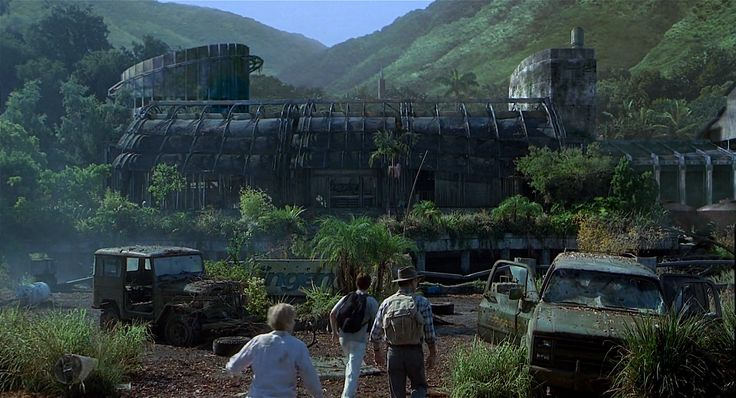

Overview
Site B, located on Isla Sorna, was the location where InGen secretly bred dinosaurs after abandoning Jurassic Park. The site is responsible for much of the chaos that unfolds in the sequels. It was intended as a backup for the main park, where dinosaurs were left to live freely, but it became a ticking time bomb.

Key Events at Site B
In *The Lost World: Jurassic Park* and *Jurassic Park III*, we learn that Site B was a breeding ground for the dinosaurs. After the failure of Jurassic Park, Site B was largely left alone. However, things went awry when teams went in to study the creatures, resulting in dangerous encounters with the likes of the T. rex and Spinosaurus.

Dinosaurs of Site B
Site B was home to many species of dinosaurs, including some of the most famous and dangerous creatures. These dinosaurs were allowed to roam free, creating a precarious ecosystem.
- Tyrannosaurus rex — The iconic apex predator.
- Spinosaurus — The terrifying new threat in *Jurassic Park III*.
- Velociraptors — Still a major threat on Site B.
- Parasaurolophus, Stegosaurus, and many more — Peaceful herbivores coexisted with the carnivores.
The Fate of Site B
By the end of *Jurassic Park III*, the fate of Site B was left uncertain. In the later films, it is implied that the island was eventually abandoned or destroyed after the events of the films. However, its legacy remains a key part of the larger Jurassic saga.
